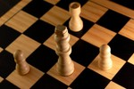
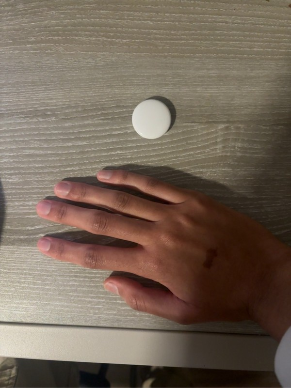
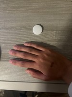

This page compares file formats, pixel dimensions, file size, and aspect ratio using a chess photo and my own geometry photo. It demonstrates why changing an image's display size differs from editing its pixels, and why stretching or enlarging an image can damage its appearance. File sizes use decimal megabytes (1 MB = 1,000,000 bytes).
Wooden Chess Pieces from Pexels
This photo connects to my interest in chess, and the wood grain and edges of the pieces make changes in detail easy to compare. It was taken by Reinis Brūzītis, whose Pexels profile identifies him as a photographer from Latvia. View the original Pexels photo and photographer credit.
The source JPEG is 6000 × 4000 pixels (24,000,000 pixels), 1.256 MB. It is a free Pexels photo; the full-resolution download is preserved here.
Original Image and Format Variations
Open the original JPEG or a full-resolution conversion in a new tab. Each conversion starts from the original, preserving its 6000 × 4000 dimensions.
Proportional preview of the source photo; the links above open the full-resolution files.
GIF: 9.861 MB. A palette of at most 256 colors can reduce smooth gradients; conversion does not guarantee a smaller file.
Grayscale PNG: 12.758 MB. Gray tones preserve light and shadow without color.
Black-and-white PNG: 0.230 MB. A threshold of 128 leaves only black or white pixels; midtones disappear. PNG stores these results losslessly.
Downsizing Images with CSS
This named copy contains the original 6000 × 4000 pixels and still uses 1.256 MB. Inline CSS displays it at 600 pixels wide, with automatic proportional height (about 400 pixels). On small screens it scales down further to fit. CSS does not reduce the download size.
Original pixels displayed smaller: 600 × approximately 400.
Proper Reduction of Image with Editor
Sharp, a pixel-based image-processing tool, resampled a fresh copy to 600 × 400 pixels and saved it as JPEG at quality 90. The actual file is now 0.041 MB (96.8% smaller in bytes). The aspect ratio is preserved to the nearest whole pixel.
Actual 600 × 400 file, displayed proportionally.
Halving both dimensions leaves one quarter of the pixels. Compressed file size does not necessarily fall by exactly three quarters because content, format, metadata, and compression settings also matter.
Improper Image Proportions with CSS
These four copies retain the 600 × 400 source pixels. CSS deliberately changes only one dimension at a time. The second reduction leaves about 44.9% of that dimension, rather than 34%. Each filename records the intended CSS dimensions.
Scroll horizontally to compare all four images. Keyboard users can focus the comparison and use the arrow keys. Fixed sizes preserve the experiment instead of silently shrinking each example to fit.
600 × 268 CSS pixels. Height reduced by 33%; width stays at 600 pixels. The file still contains 600 × 400 pixels.600 × 180 CSS pixels. Height reduced by another 33% from the previous example; width stays at 600 pixels. The file still contains 600 × 400 pixels.402 × 400 CSS pixels. Width reduced by 33%; height stays unchanged. The file still contains 600 × 400 pixels.269 × 400 CSS pixels. Width reduced by another 33% from the previous example; height stays unchanged. The file still contains 600 × 400 pixels.
Improper Enlarging with CSS
The reduced 600 × 400 file is compared with a second copy reduced to 25% of each dimension: 150 × 100, 0.007 MB. Both display at the same 600 × 400 CSS size. Enlarging the smaller copy cannot restore discarded detail.
600 × 400 source at its natural display size.

150 × 100 source enlarged to 600 × 400: compare edges and fine texture.
A Round Object Beside My Hand
My photo places a round white object beside my hand on a textured surface. The circle provides a geometric reference, while my fingers make changes in proportions especially noticeable. Photo credit: Neelesh Reddi.
The source JPEG is 959 × 1280 pixels (1,227,520 pixels), 0.208 MB. This is the file supplied for this page; no higher-resolution phone original was available.
Original Image and Format Variations
Open the original JPEG or a full-resolution conversion in a new tab. Each conversion starts from the original, preserving its 959 × 1280 dimensions.
Proportional preview of the source photo; the links above open the full-resolution files.
GIF: 0.654 MB. A palette of at most 256 colors can reduce smooth gradients; conversion does not guarantee a smaller file.
Grayscale PNG: 0.864 MB. Gray tones preserve light and shadow without color.
Black-and-white PNG: 0.025 MB. A threshold of 128 leaves only black or white pixels; midtones disappear. PNG stores these results losslessly.
Downsizing Images with CSS
This named copy contains the original 959 × 1280 pixels and still uses 0.208 MB. Inline CSS displays it at 600 pixels wide, with automatic proportional height (about 801 pixels). On small screens it scales down further to fit. CSS does not reduce the download size.
Original pixels displayed smaller: 600 × approximately 801.
Proper Reduction of Image with Editor
Sharp, a pixel-based image-processing tool, resampled a fresh copy to 600 × 801 pixels and saved it as JPEG at quality 90. The actual file is now 0.093 MB (55.3% smaller in bytes). The aspect ratio is preserved to the nearest whole pixel.
Actual 600 × 801 file, displayed proportionally.
Halving both dimensions leaves one quarter of the pixels. Compressed file size does not necessarily fall by exactly three quarters because content, format, metadata, and compression settings also matter.
Improper Image Proportions with CSS
These four copies retain the 600 × 801 source pixels. CSS deliberately changes only one dimension at a time. The second reduction leaves about 44.9% of that dimension, rather than 34%. Each filename records the intended CSS dimensions.
Scroll horizontally to compare all four images. Keyboard users can focus the comparison and use the arrow keys. Fixed sizes preserve the experiment instead of silently shrinking each example to fit.
600 × 537 CSS pixels. Height reduced by 33%; width stays at 600 pixels. The file still contains 600 × 801 pixels.

600 × 360 CSS pixels. Height reduced by another 33% from the previous example; width stays at 600 pixels. The file still contains 600 × 801 pixels.402 × 801 CSS pixels. Width reduced by 33%; height stays unchanged. The file still contains 600 × 801 pixels.269 × 801 CSS pixels. Width reduced by another 33% from the previous example; height stays unchanged. The file still contains 600 × 801 pixels.
Improper Enlarging with CSS
The reduced 600 × 801 file is compared with a second copy reduced to 25% of each dimension: 150 × 200, 0.008 MB. Both display at the same 600 × 801 CSS size. Enlarging the smaller copy cannot restore discarded detail.
600 × 801 source at its natural display size.

150 × 200 source enlarged to 600 × 801: compare edges and fine texture.
Validation note: M11 explicitly asks for original-image links in new tabs and for displaying a large original with CSS-only resizing. The general same-site tab rule and the image-size optimization check flag those required demonstrations. The originals and tab behavior are kept intact for this assignment.
Tools and assistance: ChatGPT helped create this page, captions, and comparison code. Sharp performed the format conversions and pixel resizing. Both source photographs are real photographs, not AI-generated images.